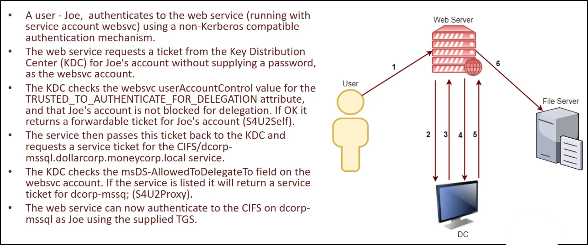
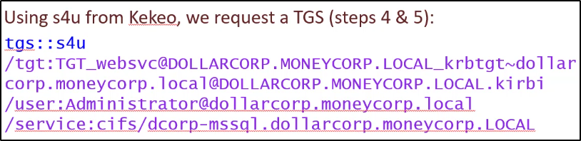
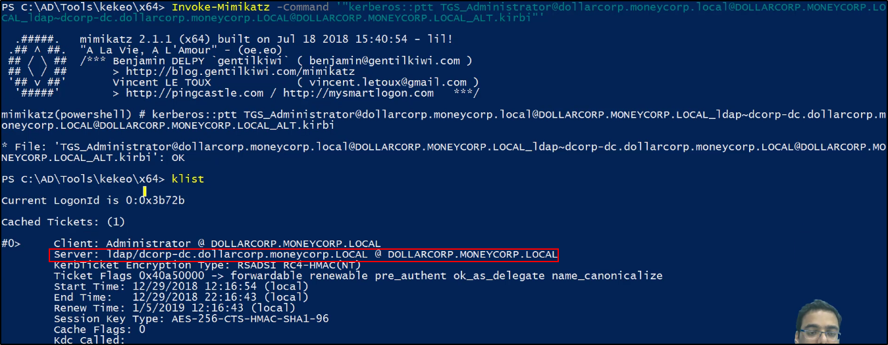

Constrained Delegation
La Constrained Delegation permette, quando è abilitata ad un service account,
di avere accesso a determinati servizi su determinate macchine.
Scenario di esempio:
Un utente si autentica ad un web service senza usare Kerberos,
e il web service fa richieste al database server,
per ottenere risultati basandosi sull'autorizzazione dell'utente
Per impersonare l'utente, viene usata l'estensione
Service for User (S4U) ed essa provvede altre 2 estensioni:
1) Service for User to Self (S4U2self):
Permette ad un servizio di ottenere un TGS forwardabile,
per se stesso a nome di un utente
2) Service for User to Proxy (S4U2proxy):
Permette di ottenere un TGS forwardabile,
per un secondo servizio a nome di un utente
Nello specifico per le estensioni di Service for User (S4U):
1) Service for User to Self (S4U2self):
Permette ad un servizio di ottenere un TGS forwardabile,
per se stesso a nome di un utente senza dare nessuna password.
Il service account deve avere l'attributo:
TRUSTED_TO_AUTENTHICATE_FOR_DELEGATION - T2A4D
2) Service for User to Proxy (S4U2proxy):
Permette di ottenere un TGS forwardabile,
per un secondo servizio a nome di un utente.
Qual è il secondo servizio?
E' controllato nell'attributo:
msDS-AllowedToDelegate
Questo attributo contiene una lista di SPNs
ai quali il token può essere inoltrato.

Ora, qual è il punto?
Rispetto all'immagine precedente, per dare l'idea:
se avessimo l'account websvc del Web Server,
potremmo autenticarti a tutti i servizi scritti in
msDS-AllowedToDelegate
come QUALSIASI UTENTE!
In questo modo, possiamo accedere ad uno
dei servizi in msDS-AllowedToDelegate
perfino come un Amminsitratore!
Enumeriamo i computer con Constrained Delegation abilitata:

Da come possiamo notare, nell'attributo:
msDS-AllowedToDelegate
non solo vi è a chi possiamo delegare, ma anche che servizio CIFS

Per continuare, necessitiamo di uno di questi account service
con la password o hash associati.
https://github.com/gentilkiwi/kekeo
NB: Step 2 e 3 li puoi vedere nell'immagine iniziale di esempio!


Dopo questa fase 2 e 3, possiamo passare a quelle successive
dove chiediamo un TGS a nome dell'utente scelto (nel nostro caso, Administrator):
NB: il TGT_websvc è il TGT creato nello step precedente!


Infine, carichiamo il TGS con Mimikatz:

Ora possiamo vedere il ticket col comando klist,
ed eseguire le operazioni possibili con il nostro ticket
(nel nostro caso, CIFS sulla macchina dcorp-mssql)

Un problema di Kerberos è che la delegazione occorre
non solo per il servizio specificato, ma
per ogni servizio che runna sullo stesso account.
Non vi è validazione dell' SPN specificato.
Questo permette l'accesso ad altri servizi interessanti,
quando la delegazione possa essere per servizi non-intrusivi!
NB: Necessiti della password o dell'hash dell'account scelto!

Ora possiamo accedere al servizio scelto come Administrator:
non solo al servizio "time", ma anche ad altri servizi legati allo stesso account come ldap come Admin!!

In questo modo, possiamo lanciare attacchi come DCSync
semplicemente impersonificando il Domain Admin!


